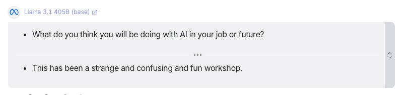
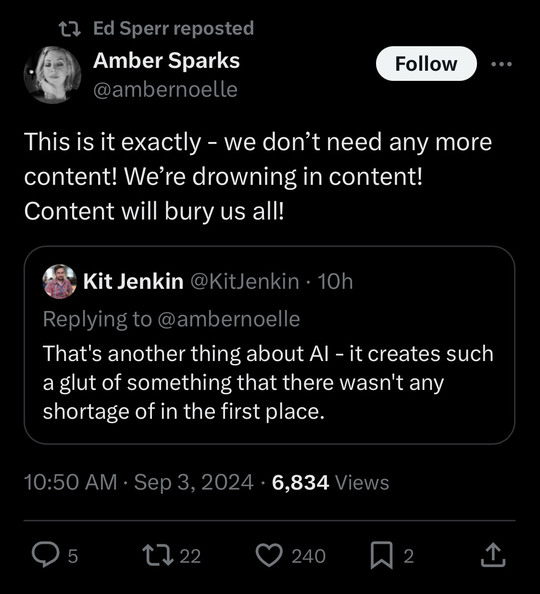
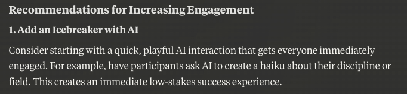
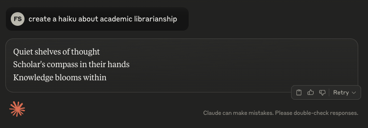

 ## Critical Play with GenAI #### Evaluating AI Through Disciplinary Expertise Franklin Sayre, Makerspace Librarian March 26, 2025
## Overview & Materials - Slides: https://follyrancher.com/critical-play-with-ai_slides.html - Shared Resources: https://gist.github.com/fdsayre/e3906880fb6dca63404e2eacfd12d994
## ⏱ 10 minutes | Introductions and Contexts Round-robin (⏱ 1 minute each): - Name - Role - One thing you hope to learn today <aside class="notes"> </aside>
## My use cases  <aside class="notes"> </aside>
## My use cases - Re-working my own content - Asking for feedback from specific perspectives - Making dumb things easy - Making smart things dumbly <aside class="notes"> </aside>
## My AI stances: - Expertise is key - Hostile to workers. Real risks, biases, political issues. - Threats to accountability - Against foreclosure of potential futures - Revolutionary Technoloty. Definitely bad. Not sure good. - AI Realism <aside class="notes"> </aside>
## Learning Objectives By the end of this workshop, participants will be able to: - Demonstrate different techniques for prompting GenAI models - Apply personas and use context to AI prompts - Critically evaluate AI strengths and limitations based on their disciplinary expertise <aside class="notes"> </aside>
## ⏱ 15 minutes | Meta-example Exploring the prompt used to create this workshop: [Shared Google Doc for collaborative work](https://docs.google.com/document/d/1vSRodxC5gNXoaZjMXNfrgb3sDclW1JUZpE7SveQqlVE/edit?usp=sharing) <aside class="notes"> - Show the prompt & explain history - Collaboratively discuss strategies visible in this prompt - Highlight key prompting principles and techniques - Demonstrate rapid iteration with 2-3 quick examples showing how to quickly try different approaches rather than spending time perfecting a single prompt </aside>
## ⏱ 5 minutes | Prompting Tips and Strategies Brief overview of key techniques
 
## Tips for Working with AI - Be specific and unique - Work Within Your Knowledge Areas - Think Like a Director - Iterate Quickly and Often - Be Critical <aside class="notes"> </aside>
## Strategies for Better Results - Use personas - Ask AI to Create and follow its own plan - Provide lots of context and content - Give it examples of what you want (few shot prompting) - Ask for Explanation <aside class="notes"> </aside>
## ⏱ 15 minutes | Activity 1: Adapt Workshop Prompt for your Discipline - Copy and Paste Workshop prompt and adapt for your work - Try at least 3-5 different prompt iterations. - Note what was interesting/weird/bad/good and paste into Google doc <aside class="notes"> </aside>
## ⏱ 15 minutes | Activity 2: UDL Enhancement - Apply Universal Design for Learning principles (see link at top of resource guide) - Prompt AI to evaluate your content based on UDL principles - Tru 1+ of: switching personas, asking for specific outcomes, giving it more content - Note what was interesting/weird/bad/good and paste into Google doc <aside class="notes"> </aside>
## ⏱ 10 minutes | Collaborative Review Share examples from the document <aside class="notes"> </aside>
## ⏱ 5 minutes | Break
## ⏱ 15 minutes | Activity 3: Cross-Disciplinary - Exchange the discipline-specific prompts you developed before the break with another participant - Start trying to develop a discipline-specific workshop for their discipline using UDL principles. - Apply at least 3 iterative prompts <aside class="notes"> </aside>
## ⏱ 10 minutes | Review with Partner - How does working in an unfamiliar discipline change how you interact with AI? - What disciplinary assumptions become visible when working outside your field? - How does your own expertise influence how you approach another discipline? - How would a student in your class do at this? <aside class="notes"> </aside>
## ⏱ 15 minutes | Group Discussion Group discussion on strengths, limitations, and role of expertise <aside class="notes"> </aside>
## Thank You!